CS 564 Notes
2026-03-29
Keywords
Diagrams
activity diagrams show the flow of actions in a business process while statechart diagrams describe dynamic interactions between system objects and class diagrams are more general ER diagrams to model application entities and their logical relationships in addition to data entities and their relationships
Keys are to be underlined in an ER diagram.
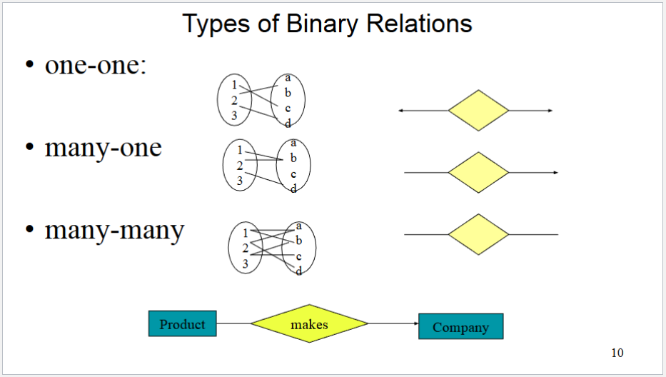
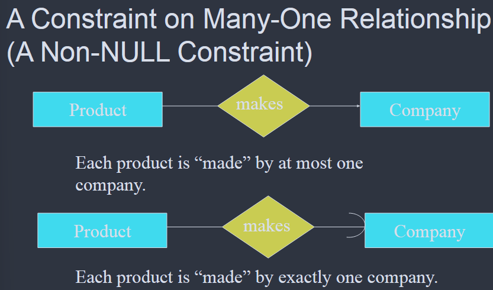
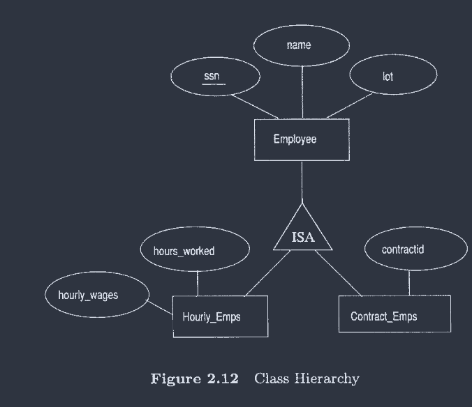
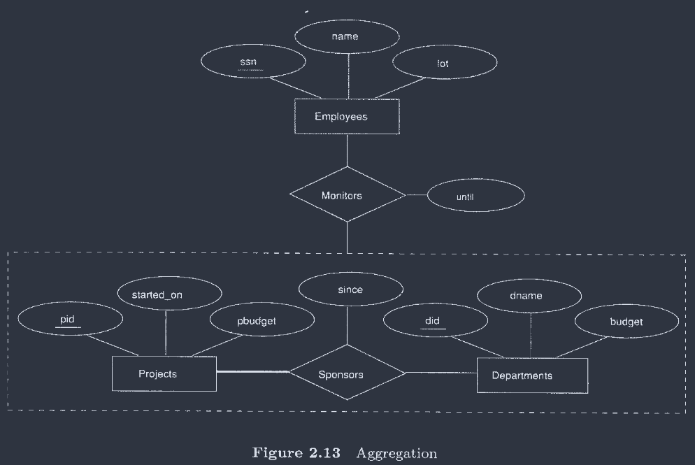
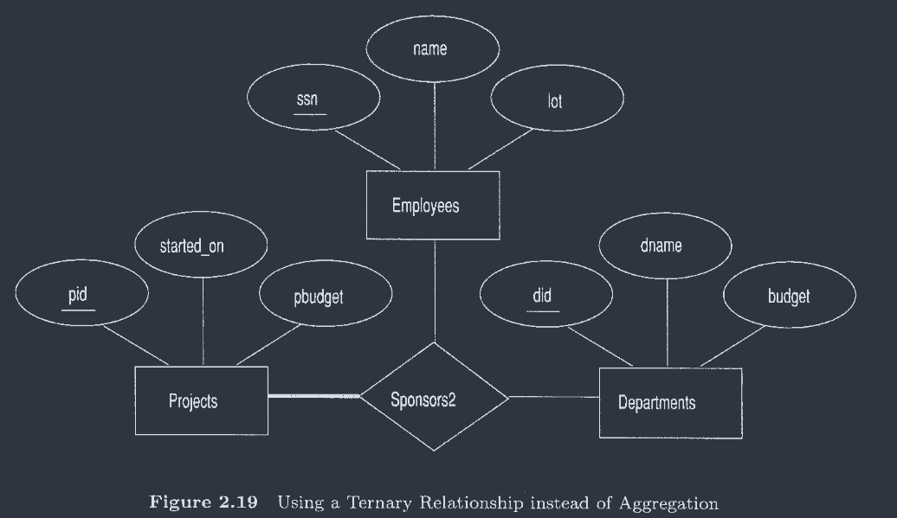
Database Systems Basics
Definitions
data models vs databases
data models model real-world scenarios of interest while databases are a collection of interrelated data items.
entities and relationships
entities are specific individually distinguishable things ex. students, faculty, courses, classrooms, etc… and a collection of entities is an entity set.
An entity set should at least
- be more than the name of something, it needs at least one non-key attribute
or
- be one of the “many” in a M:N or 1:N relationship
relationships are the connections between entities and relationship sets are collections of relationships.
schema, domains
schemas are descriptions of data in terms of the data model
domains are the allowable values for each attribute essentially what type of field (int,string, etc…) each value can be. They must be atomic
Relational Model
relational databases from the bottom up
tuples/records fill the rows of a relation which is essentially a table. Technically the table is only specific instance of the relation, but that is generally an arbitrary distinction
the columns of the relation are attributes which are entity descriptions.
-
each attribute has an atomic domain (a string, an integer, …) something that is a single non-breakable value, such as a persons ssn which cannot be broken up into smaller chunks of data
atomic attributes are attributes only made up of one atomic domain.
the degree/arity is the number of attributes or columns in the relation and the cardinality is the number of tuples/records or rows in it
relational databases are specifically a collection of relations with distinct names
relational database schema are a collection of schemas for the relations in the database
an instance of a relational databases is a collection of relation instances, one per relation schema in the general database schema
one step out
keys are an attribute that can uniquely identify an object in the set - one of which will get designated as the primary key the identifying data point for that record, the others are candidate keys they could be primary keys but they aren’t
A relationship can also have descriptive attributes which describe the relationship not the entity.
ternary relationships are specifically when more than two entities are involved in a relationship.
weak entities can only be identified uniquely by considering some of its attributes in conjunction with the primary key of another entity.
weak entities must have an identifying owner whose primary key connects the two.
This 1:N relationship is the identifying relationship
class hierarchies are sometimes needed where sub-classes which are typically IS-A relationships have individual attributes but also all of the superclass attributes
-
such as some students are undergrad and others are graduate, they are both students, but they each have separate attributes that allow for distinctions
aggregation is some form of combining data typically using aggregate functions sum,avg,count, etc…
constraints
key constraints are restrictions on how relationships can occur, ex. each department can only have one manager
these are also called single value constraints and are when an attribute
participation_constraints note the required participation level of an entity, ex. every department must have a manager, but every manager does not need to supervise an employee
integrity constraints are conditions providing specifying conditions that must be satisfied by the data
-
One type is referential integrity constraints ex. if you work for a company it has to exist in the database.
domain constraints specify what the domains are allowed to be for each attributes
-
ex. people’s ages have to be between 0 and 115
overlap constraints determine if the subclass is allowed to contain the same entity, ex. can one person be both a student and a teacher, if it is not specified no overlap is assumed.
covering constraints determine whether the entities in the subclass include ALL of the entities in the superclass, ex. must every employee either be hourly or contract, if not specified it is assumed that non subclass entities are allowed
DB Programming
special values
the SQL logic is more accurately depicted as 3-part, true,false, andunknown since when any value is compared to NULL the value is unknown ala schrodingers cat. therefore accounting for nulls requires the usage of the null-specific terms
IS null
IS NOT null
#etc...EXISTS(query) is true if and only if there is a valid query within.
logic
[queries]{{#query} are essentially questions posed to the database that pull information out of the different tables
subqueries or 2nd level select... from... where... statements can be used in place of values including in from and where statements but they must be guaranteed to ONLY produce one value
[GROUP BY]{grpby} and HAVING are often used together to aggregate within queries where having works pretty much like is
defining a database schema
A database schema contains the definitions for the tables of that database
defining a relation
…
you can define the default values by adding default 'value', onto the line, this can be done when adding to a table as well
editing
you can insert values into tables via subqueries
INSERT INTO ... (SELECT... FROM... WHERE...) );
when deleting be wary around using and because it is a staged process and will not work properly
constraints
constraints are relationships among data elements the the DMBS is required to enforce of which there are a few different kinds
-
covering constraints, domain constraints, integrity constraints, key constraints, overlap constraints, participation constraints
triggers are executed only when a specific condition occurs.
checks put constraints on the value of particular attributes but only checks when the value is inserted or updated
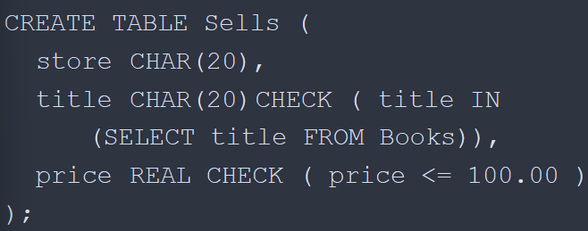
assertions should be checked after every modification to any relation of the DB
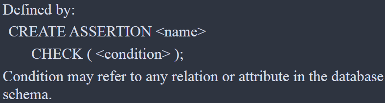
CS database info
definitions
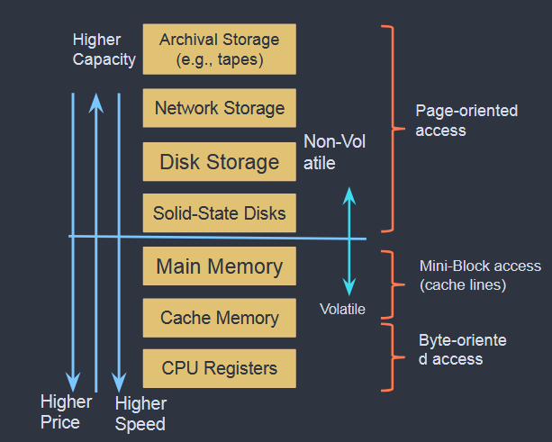
each record in a file has a unique identifier called the record id which is used to identify the disk address
data is read into memory for processing and written into storage by the buffer manager while the space on the disk is handled by the disk space manager
the file layer stores the records in a file of records (file) (which is essentially a table) in a collection of disk pages (pages) (essentially just data chunks). Also tracking pages alloted to files, and the space within.
a heap file is unordered,
SQL Notes
INFORMATION_SCHEMA
selected tables out of the information schema db find all at
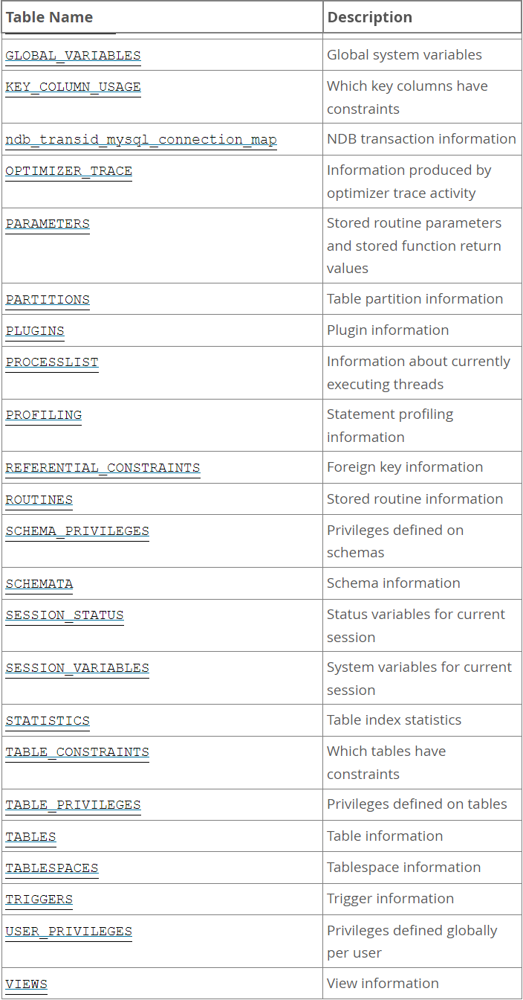
\[COLUMNS\]
TABLE_CATALOG- The name of the catalog to which the table containing the column belongs. This value is always
def.
- The name of the catalog to which the table containing the column belongs. This value is always
TABLE_SCHEMA- The name of the schema (database) to which the table containing the column belongs.
TABLE_NAME- The name of the table containing the column.
COLUMN_NAME- The name of the column.
ORDINAL_POSITION- The position of the column within the table.
ORDINAL_POSITIONis necessary because you might want to sayORDERBYORDINAL_POSITION.UnlikeSHOW COLUMNS,SELECTfrom theCOLUMNStable does not have automatic ordering.
- The position of the column within the table.
COLUMN_DEFAULT- The default value for the column. This is
NULLif the column has an explicit default ofNULL, or if the column definition includes noDEFAULTclause.
- The default value for the column. This is
IS_NULLABLE- The column nullability. The value is
YESifNULLvalues can be stored in the column,NOif not.
- The column nullability. The value is
DATA_TYPE- The column data type.
- The
DATA_TYPEvalue is the type name only with no other information. TheCOLUMN_TYPEvalue contains the type name and possibly other information such as the precision or length.
CHARACTER_MAXIMUM_LENGTH- For string columns, the maximum length in characters.
CHARACTER_OCTET_LENGTH- For string columns, the maximum length in bytes.
NUMERIC_PRECISION- For numeric columns, the numeric precision.
NUMERIC_SCALE- For numeric columns, the numeric scale.
DATETIME_PRECISION- For temporal columns, the fractional seconds precision.
CHARACTER_SET_NAME- For character string columns, the character set name.
COLLATION_NAME- For character string columns, the collation name.
COLUMN_TYPE- The column data type.
- The
DATA_TYPEvalue is the type name only with no other information. TheCOLUMN_TYPEvalue contains the type name and possibly other information such as the precision or length.
COLUMN_KEY- Whether the column is indexed:
- If
COLUMN_KEYis empty, the column either is not indexed or is indexed only as a secondary column in a multiple-column, nonunique index. - If
COLUMN_KEYisPRI, the column is aPRIMARY KEYor is one of the columns in a multiple-columnPRIMARY KEY. - If
COLUMN_KEYisUNI, the column is the first column of aUNIQUEindex. (AUNIQUEindex permits multipleNULLvalues, but you can tell whether the column permitsNULLby checking theNullcolumn.) - If
COLUMN_KEYisMUL, the column is the first column of a nonunique index in which multiple occurrences of a given value are permitted within the column. - If more than one of the
COLUMN_KEYvalues applies to a given column of a table,COLUMN_KEYdisplays the one with the highest priority, in the orderPRI,UNI,MUL. - A
UNIQUEindex may be displayed asPRIif it cannot containNULLvalues and there is noPRIMARY KEYin the table. AUNIQUEindex may display asMULif several columns form a compositeUNIQUEindex; although the combination of the columns is unique, each column can still hold multiple occurrences of a given value.
- If
- Whether the column is indexed:
EXTRA- Any additional information that is available about a given column. The value is nonempty in these cases:
\[KEY_-COLUMN_-USAGE\]
The KEY_COLUMN_USAGE table describes which key columns have constraints.
CONSTRAINT_CATALOG- The name of the catalog to which the constraint belongs. This value is always
def.
- The name of the catalog to which the constraint belongs. This value is always
CONSTRAINT_SCHEMA- The name of the schema (database) to which the constraint belongs.
CONSTRAINT_NAME- The name of the constraint.
TABLE_CATALOG- The name of the catalog to which the table containing the column belongs. This value is always
def.
- The name of the catalog to which the table containing the column belongs. This value is always
TABLE_SCHEMA- The name of the schema (database) to which the table containing the column belongs.
TABLE_NAME- The name of the table containing the column.
COLUMN_NAME- The name of the column that has the constraint.
- If the constraint is a foreign key, then this is the column of the foreign key, not the column that the foreign key references.
ORDINAL_POSITION- The column’s position within the constraint, not the column’s position within the table. Column positions are numbered beginning with 1.
POSITION_IN_UNIQUE_CONSTRAINT- NULL for unique and primary-key constraints. For foreign-key constraints, this column is the ordinal position in key of the table that is being referenced.
REFERENCED_TABLE_SCHEMA- The name of the schema (database) referenced by the constraint.
REFERENCED_TABLE_NAME- The name of the table referenced by the constraint.
REFERENCED_COLUMN_NAME- The name of the column referenced by the constraint.
\[REFERENTIAL_-INFORMATION\]
The REFERENTIAL_CONSTRAINTS table provides information about foreign keys.
CONSTRAINT_CATALOG- The name of the catalog to which the constraint belongs. This value is always
def.
- The name of the catalog to which the constraint belongs. This value is always
CONSTRAINT_SCHEMA- The name of the schema (database) to which the constraint belongs.
CONSTRAINT_NAME- The name of the constraint.
UNIQUE_CONSTRAINT_CATALOG- The name of the catalog containing the unique constraint that the constraint references. This value is always
def.
- The name of the catalog containing the unique constraint that the constraint references. This value is always
UNIQUE_CONSTRAINT_SCHEMA- The name of the unique constraint that the constraint references.
UNIQUE_CONSTRAINT_NAME- The name of the column that has the constraint.
MATCH_OPTION- The value of the constraint
MATCHattribute. The only valid value at this time isNONE.
- The value of the constraint
UPDATE_RULE- The value of the constraint
ON UPDATEattribute. The possible values areCASCADE,SET NULL,SET DEFAULT,RESTRICT,NO ACTION.
- The value of the constraint
DELETE_RULE- The value of the constraint
ON DELETEattribute. The possible values areCASCADE,SET NULL,SET DEFAULT,RESTRICT,NO ACTION.
- The value of the constraint
TABLE_NAME- The name of the table containing the column.
REFERENCED_TABLE_NAME- The name of the table referenced by the constraint.
\[TABLES\]
TABLE_CATALOG- The name of the catalog to which the table containing the column belongs. This value is always
def.
- The name of the catalog to which the table containing the column belongs. This value is always
TABLE_SCHEMA- The name of the schema (database) to which the table belongs.
TABLE_NAME- The name of the table.
TABLE_TYPEBASE TABLEfor a table,VIEWfor a view, orSYSTEM VIEWfor anINFORMATION_SCHEMAtable.- The
TABLEStable does not listTEMPORARYtables.
ENGINE- The storage engine for the table.
- For partitioned tables,
ENGINEshows the name of the storage engine used by all partitions.
VERSION- The version number of the table’s .frm file.
ROW_FORMAT- The row-storage format (
Fixed,Dynamic,Compressed,Redundant,Compact).
- The row-storage format (
TABLE_ROWS- The number of rows.
TABLE_ROWSisNULLforINFORMATION_SCHEMAtables.
AVG_ROW_LENGTH- The average row length.
DATA_LENGTHH- ?
MAX_DATA_LENGTH- ?
INDEX_LENGTH- ?
DATA_FREE- The number of allocated but unused bytes.
AUTO_INCREMENT- The next
AUTO_INCREMENTvalue.
- The next
CREATE_TIME- when the table was created.
UPDATE_TIME- When the data file was last updated.
CHECK_TIME- When the table was last checked.
TABLE_COLLATION- The table default collation. The output does not explicitly list the table default character set, but the collation name begins with the character set name.
CHECKSUM- The live
checksumvalue, if any.
- The live
CREATE_OPTIONS- Extra options used with CREATE TABLE
TABLE_COMMENT- The comment used when creating the table (or information as to why MySQL could not access the table information).
\[TABLES_-CONSTRAINTS\]
The TABLE_CONSTRAINTS table describes which tables have constraints.
CONSTRAINT_CATALOG- The name of the catalog to which the constraint belongs. This value is always
def.
- The name of the catalog to which the constraint belongs. This value is always
CONSTRAINT_SCHEMA- The name of the schema (database) to which the constraint belongs.
CONSTRAINT_NAME- The name of the constraint.
MATCH_OPTION- The value of the constraint
MATCHattribute. The only valid value at this time isNONE.
- The value of the constraint
TABLE_SCHEMA- The name of the schema (database) to which the table belongs.
TABLE_NAME- The name of the table.
CONSTRAINT_TYPE- The type of constraint. The value can be
UNIQUE,PRIMARY KEY,FOREIGN KEY, orCHECK.This is aCHAR(notENUM) column. TheCHECKvalue is not available until MySQL supportsCHECK. - The
UNIQUEandPRIMARY KEYinformation is about the same as what you get from theKey_namecolumn in the output fromSHOW INDEXwhen theNon_uniquecolumn is 0.
- The type of constraint. The value can be
General SQL
(pronounced sequel), (ANSI/ISO language)
Composed of descriptive words, and non procedural (you describe what you want done, not how
Categories of statements

There is both ANSI SQL which is the standard and DMBS Specific ‘dialects’
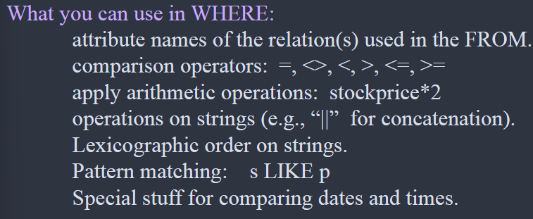
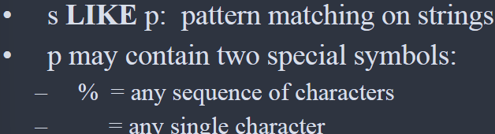
constraints are optional and [] are not actually used


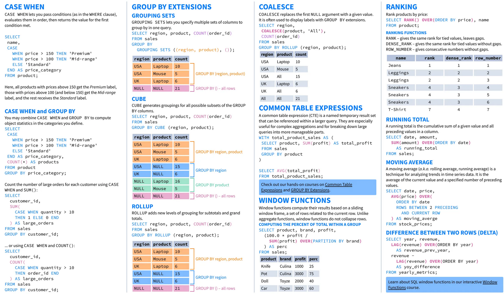

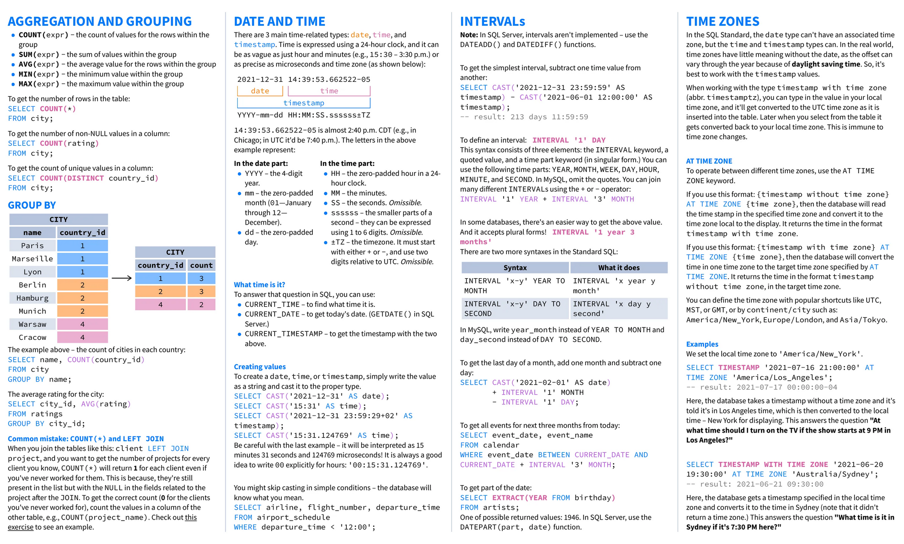